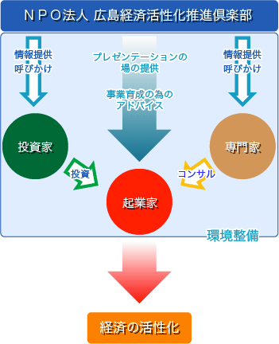
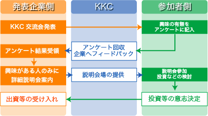
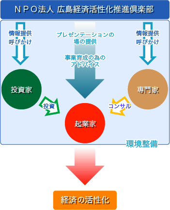
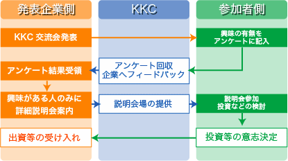

KKCについて
この法人は、ベンチャー企業育成環境を高める事が経済活性化には不可欠であると考え、ベンチャー企業・起業者に対する支援者の方々への教育事業を行い、支援環境を整え、広島経済の活性化によって活力あるまちづくりに寄与する事を目的とする。

KKC交流会を通じた資金調達のプロセス概略図


KKCについてこの法人は、ベンチャー企業育成環境を高める事が経済活性化には不可欠であると考え、ベンチャー企業・起業者に対する支援者の方々への教育事業を行い、支援環境を整え、広島経済の活性化によって活力あるまちづくりに寄与する事を目的とする。  KKC交流会を通じた資金調達のプロセス概略図 |